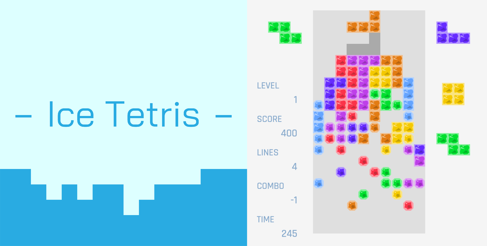

遊び方
- 基本はテトリスです。
- 25~60秒ほどで溶けます。
- とりあえずやってみれば非常にうざいということがわかると思います。
- もう一度プレイしたい場合は再読み込みしてください。
備考
- お使いのブラウザで動かない場合は、最新版のChromeでお試しください。
- スタート画面やTスピン判定、スマホ対応などを行っていませんが、急いで作ったためご了承ください。
- リポジトリ: https://github.com/Level222/ice-tetris/
- 別に溶かさなくても良かったのではと後から思っています。